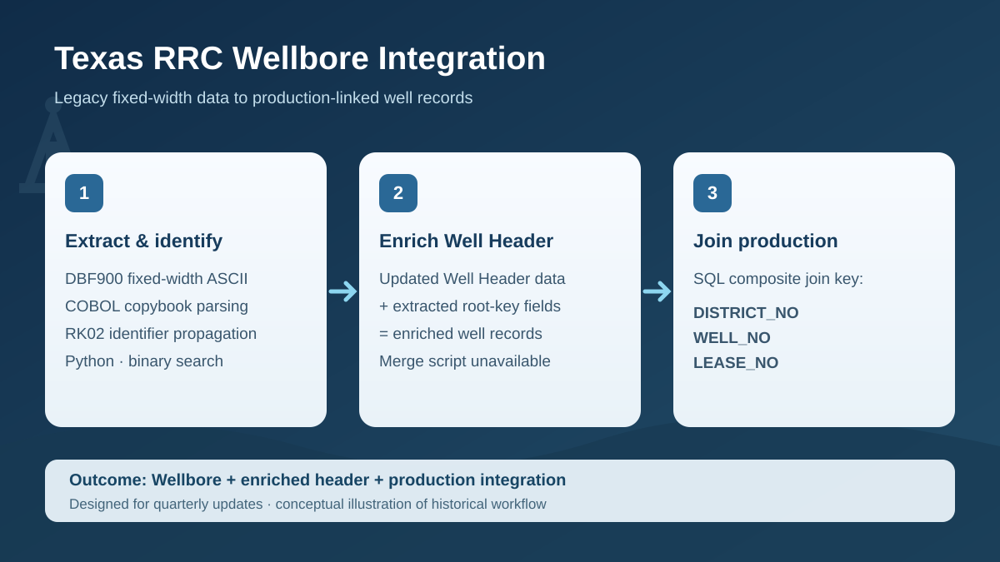

PROJECT CASE STUDY
Texas RRC — Full Wellbore & Production Data Integration
Three-stage Python, geospatial, and SQL workflow: extract RK02-linked wellbore identifiers, enrich updated Well Header records, and join production data using district, well, and lease identifiers.
01IntroductionProblem and context
The Texas Railroad Commission (RRC) Full Wellbore dataset provides detailed regulatory records in a legacy fixed-width ASCII format. The project combined three distinct sources: RRC wellbore technical records, an updated team-provided Well Header dataset, and production data. The core challenge was to recover consistent completion identifiers and carry them into datasets that could be joined reliably.
I developed the RK02-centered Python extraction and identifier-propagation workflow, used the resulting information to enrich updated Well Header data, and subsequently integrated the enriched headers with production records using SQL and the composite district–well–lease key.
02MethodologyLegacy parsing, spatial joins, SQL
Workflow at a glance
Follow the stages below, then read the detailed methodology.
Detailed methodology
1. Extract and interpret legacy flat files
I worked with the ASCII distribution of the Texas RRC Full Wellbore dataset. Although ASCII specifies the character encoding, the source also uses defined record layouts that must be interpreted to recover structured fields. Python-based parsing and transformation converted the relevant records into data suitable for subsequent joins and database-oriented processing.
2. Connect record keys to identifiers and coordinates
RK02 (WBCOMPL) served as the primary identifier source. I standardized district, lease/RRC gas ID, and well number fields, retaining provenance in DISTRICT_NO_SOURCE, LEASE_NO_SOURCE, and WELL_NO_SOURCE. Copybook-driven parsing, zoned-decimal conversion, and binary-search RK02 interval association propagated those identifiers into separate technical root-key tables, including RK13 location records. RK01 was explored mainly for wellbore characteristics rather than as the integration key.
3. Spatially enrich the existing Well Header data
The extracted root-key identifiers were merged into an updated, team-provided Well Header dataset. The earlier project description identifies geographic proximity matching as part of this enrichment step. However, the original merge script is unavailable, so its exact matching thresholds, implementation details, and validation logic cannot be independently reconstructed from the surviving extraction code.
4. Join enriched headers to production data
With the Well Header dataset enriched, I used SQL to join it to production data on the three-part identifier (DISTRICT_NO, WELL_NO, LEASE_NO). This was a separate downstream SQL stage, not a feature of the surviving Python extraction script. Oil lease numbers and gas RRC IDs have different meanings, so record classification and source provenance matter when validating those joins.
5. Design for repeatable updates
The integrated workflow was intended to be updated every quarter as source records changed. Separating RK02 extraction, Well Header enrichment, and SQL production joins made recurring updates feasible; the available evidence does not establish that an automated quarterly scheduler was deployed.
Source and code: Texas RRC Wellbore Integration repository · Official RRC data downloads · RRC WBA091 Oil and Gas Well Bore System guide (2019).
Data quality considerations
Geographic proximity is useful for linking records but does not guarantee identity: multiple wellbores can be close together. Candidate matches therefore need validation, especially where nearby wells or inconsistent coordinates could introduce ambiguity. The missing Well Header merge script prevents verification of its original matching tolerance and validation rules. The historical RK02 extraction also warrants oil/gas identifier and record-boundary checks.
03FiguresIllustrative placeholder

PROJECT TAKEAWAYS
Why This Project Matters
Bridging legacy records, spatial data, and relational databases
Practical value
Linking regulatory wellbore records to existing well headers and production information creates a more usable foundation for oil and gas research. Repeatable extraction and integration also make it easier to incorporate future data releases without rebuilding the process from scratch.
Engineering skills demonstrated
This project combines legacy fixed-width flat-file interpretation, Python ETL, SQL relational joins, geospatial proximity matching, identifier reconciliation, and database-oriented workflow design. The central challenge was recovering consistent RK02 identifiers, enriching the updated Well Header dataset, and connecting it to production data using a three-column SQL join designed for quarterly refreshes.